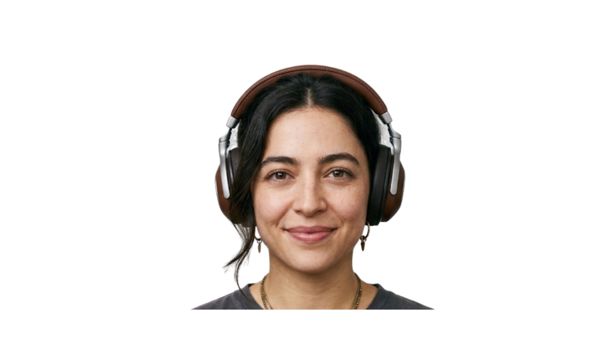

Kazuya Ninomiya
Kazuya Ninomiya é o fundador do KaMusic, criado em Belo Horizonte com o objetivo de tornar a música mais acessível. Filho de imigrantes japoneses, desenvolveu desde jovem uma forte paixão pela arte sonora. Mesmo trabalhando como caixa de supermercado, manteve o projeto ativo por muitos anos. Sua ideia era unir educação musical, história e cultura em um único espaço. Hoje, o KaMusic conecta diferentes gerações através da música e do conhecimento musical.
Marcos da Silva Gomes
Marcos da Silva Gomes entrou para o KaMusic em 2022 após perceber o potencial do projeto criado por Kazuya. Estudante de Sistemas de Informação e apaixonado por jazz e bossa nova, decidiu ajudar voluntariamente na modernização do site. Ele reformulou o visual da plataforma, criou a arquitetura tecnológica e aproximou o portal do público jovem. Também desenvolveu recursos interativos que se tornaram destaque entre os estudantes. Atualmente, é reconhecido como cofundador tecnológico do KaMusic.

Emily Mariane da Silva
Emily Mariane da Silva contribuiu para o KaMusic trazendo seu conhecimento em preservação histórica e organização de arquivos culturais. Especialista em Ciência da Informação, dedicava-se à restauração de documentos e manuscritos antigos em Minas Gerais. Apaixonada por jazz e música eletrônica, passou a reunir raridades musicais e materiais históricos para o projeto. Sua participação ajudou a fortalecer a identidade cultural e artística do KaMusic. Emily tornou-se responsável por enriquecer o acervo e valorizar a memória musical.